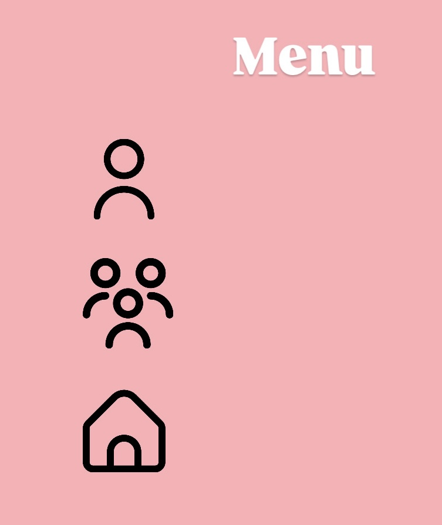

*Чтобы посмотреть, как работает данный тег,
нажмите на иконки (аватар, группа людей, домик) на изображении.
Тег <area> определяет область, которая является частью изображения-карты, и связанную с ней гиперссылку.
Область может быть прямоугольной, круглой или многоугольной формы. Тег <area> не может использоваться
самостоятельно и должен всегда находиться внутри контейнера <map>.
Атрибуты тега <area>:
- shape — форма области. Может быть rect (прямоугольник), circle (круг) или poly (многоугольник).
- coords — координаты области. Зависят от значения shape. Для прямоугольника указываются координаты левого
верхнего угла и правого нижнего угла (x1,y1,x2,y2). Для круга указывается координаты центра и радиус
(x,y,r). Для многоугольника указываются координаты всех точек (x1,y1,x2,y2,x3,y3,...).
- alt — описание области для пользователей, которые не могут визуально увидеть карту изображения.
- download — предлагает скачать по ссылке целевой ресурс, указанный в href, вместо его отображения в
браузере.
- href — адрес, на который будет переходить пользователь при клике на область.
- hreflang — язык, на котором написана целевая страница.
- media — условия, которые должны быть выполнены для применения стиля к целевой странице.
- referrerpolicy — политика отправки referrer при переходе по ссылке. Это влияет на то, как информация о
странице-источнике передается на страницу-назначение.
- rel — определяет отношение между текущей страницей и целевой страницей.
- target — указывает, как будет открыта целевая страница. Значения: _self (в текущем окне), _blank (в
новом окне), _parent (в родительском фрейме) или _top (во всем окне браузера).